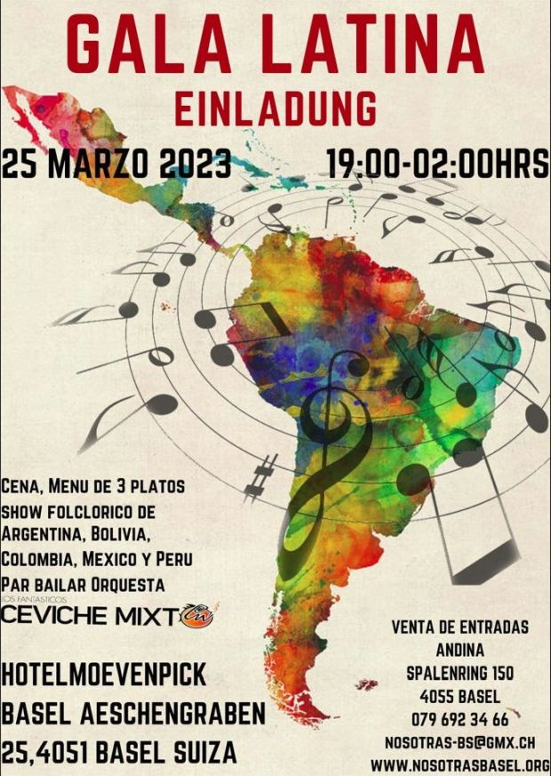

|
Centro intercultural de información | Interkulturelle Informationsstelle |  |
| ÜBER UNS | UNSER ANGEBOT |
TEAM | KURSE | EVENTS | PROJEKTE | KONTAKT | PRESSE | LINKS |
|  MENU «GALA LATINA» Samstag 25. März 2023 Solterito Bohnen-Tomaten Salat mit Lila Kartoffeln, Fetakäse, Oliven und Nüssli Salat * Gegrilltes Entrecote (150 Gr) an grünen Bohnen, Kartoffel Mille Feuille, Ofen Schalotten, Chimichurri Mayonnaise und Malbec Jus * Mango und Bergamotte Mousse, Orangen-Chips und Mango Sorbet * Mineralwasser (mit/ohne
Kohlensäure) und Kaffee/Espresso/Tee sind im Menüpreis inklusive. Alle sonstigen Getränke werden nach Verbrauch verrechnet. Mövenpick Hotel Basel, Aeschengraben 25 CH-4002 Basel, Switzerland |
Evento “Gala Latina” El 25 de marzo 2023 Nuestra asociación ha decidido organizar un evento especial con el fin de promover la participación activa de los inmigrantes en la sociedad Suiza. Tambien, con este proyecto queremos concientizar a la población sobre el recorrido de un inmigrante para poder encontrar su lugar en esta sociedad. Las exigencias son altas y las responsabilidades son grandes. Todo esto requiere de un esfuerzo psicológico, físico y mental. En este evento: “Gala Latina” haremos un homenaje a las personas que provienen de América Latina y que residen 20 o 50 años en esta region de Suiza. Otorgaremos un reconocimiento escrito a inmigrantes latinos por sus valiosos aportes personales y profesionales en esta sociedad. Le invitamos a participar de esta actividad internacional o intercultural. "GALA LATINA" Fr.85.- por persona Menu, Show Flolclórico Orquesta vivo “Ceviche Mixto” Noche inolvidable Entrega del documento de reconocimiento MUJERES NOMINADAS AL RECONOCIMIENTO ESCRITO POR SUS VALIOSOS APORTES PERSONALES Y PROFESIONALES EN ESTA SOCIEDAD SUIZA. BRASIL Arlete Kaufmann, BS Clarice dos Santos, BL COLOMBIA Nelly Stark-Corredor, BL Martha García, BS CHILE Pamela Alonso y 2 Hnas. BS ECUADOR Katalina Gröflin, BL MEXICO Elvira Amstutz-Tarello, BL Claudia Sanchéz BL PERU Doris Nonnato, BL Rosa Scossa, BS |
| ANDINA-Basel Tienda de productos latinos y españoles permite autofinanciar en gran parte nuestro local. En Andina se tiene la posibilidad de colaborar unas horas y así ganar experiencia en el ambito laboral en idioma alemán y español. En Andina las personas nuevas en esta región y personas de la tercera edad encuentran la socialización intercultural. Andina recibe colaboradores de 18 a 70 años de edad. Nosotras un proyecto sin fines de lucro. ANDINA - Nosotras Spalenring 150, 4055 Basel andina-bs@gmx.ch |
CANTO Y MOVIMIENTO El proyecto para este 2022 ofrece 2 grupos Grupo Ave dirigido a niñas y niños entre 3 a 5 años Grupo Botón dirigido a niñas y niños entre 6 y 8 años Canto y movimiento nace en el año 2020 con el fin de fomentar el idioma español con la expresión corporal y musical. Una hora dedicada al movimiento y canto infantil con la pedagoga Giovana Urrutia. Variedad de instrumentos acompañan esta actividad. Octubre 2022 Spalenring 150, (1.Piso) 4055 Basel Tram 1 y 6 hasta la parada Brausebad. Infos: 079 692 34 66 y nosotras-bs@gmx.ch |
| Projekt "Encuentro Cultural", ein Treffpunkt für Menschen aus veschieden Kulturen Hier geniesst man gemeinsam und in lockerer Atmosphäre Musik, Tanz und kulinarische Spezialitäten aus verschiedenen Ländern |
Die HSK, "Heimatliche Sprache und Kultur" für
Kinder aus binationalen und lateinamerikanischen Familien, zwecks kontinuierlicher Pflege von Sprache und Kultur Heute eine unabhängige Organisation https://folchispanoamericano.ch/ |
| Allschwilerstrasse 27, 4055 Basel, Schweiz Tel. 061 301 01 60 - 079 692 34 66  info(at)nosotrasbasel.org info(at)nosotrasbasel.org |